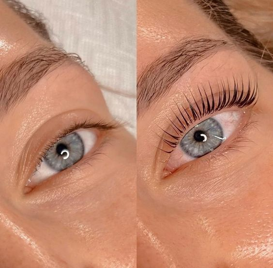
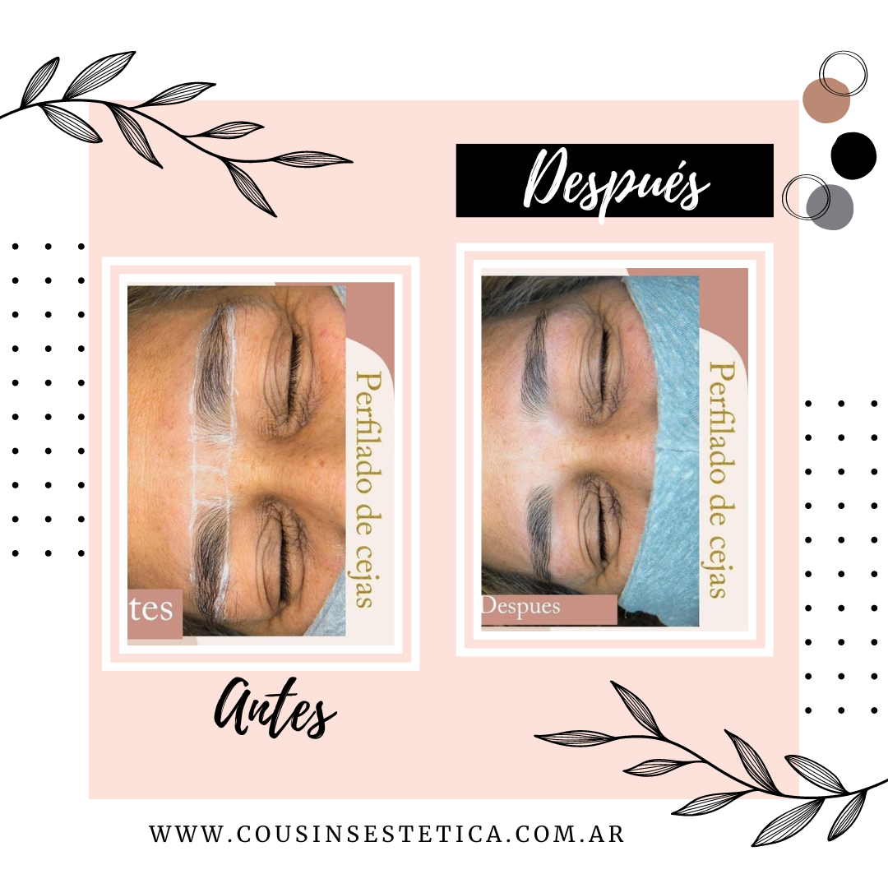

LIFFTING DE PESTAÑAS
¿QUE ES?
Es una solución rapida que remplaza la busqueda de la máscara de pestañas perfecta y te ayuda a obtener la largura y el volumen deseado. Así, el liffting de pestañas es el tratamiento ideal para elevar y acentuar la curvatura de las pestañas de manera natural, provocando una mirada mas sensual y sofisticada.
¿QUE ESTAS ESPERANDO? CONSULTANOS TURNOS Y PRECIOS POR WHATSAPP!
EXTENCIÓN DE PESTAÑAS

¿CÓMO FUNCIONAN LAS EXTENSIONES?
Las extensiones se ponen pelo por pelo sobre las tuyas naturales para conseguir más cantidad y longitud. Dependiendo del resultado que quieras, puedes escoger más largas, cortas, con más grosor o con menos. El proceso es muy poco más largo que el del lifting, puede durar entre 1 y 2 horas. ¿Y el resultado? Un efecto de pestañas infinitas, llenas de volumen y con un look total black. Perfectas si te quieres olvidar de la máscara de pestañas por una temporada. Puede llegar a durar hasta 2 meses!
PERFILADO DE CEJAS
¿QUE ES?
Es una tecnica que se utiliza para darle una forma a la ceja y así tambien resaltar los rasgos de la cara. es totalmente PERZONALIDADO para cada uno!
¿COMO SE REALIZA?
Consta de varios pasos:
- Se higieniza la zona.
- Se dibuja el diseño de la ceja con un calibre para tener bien definidas las medidas de la cara y asi poder realizar la forma.
- Se comienza a limpiar esos pelitos que estan por fuera del dibujo la pincita y las pelusas con perfilador.
- Por ultimo limpiamos lo que habiamos dibujado.
¿CUANTO DURA?
Dura aproximadamente 30-40 minutos.